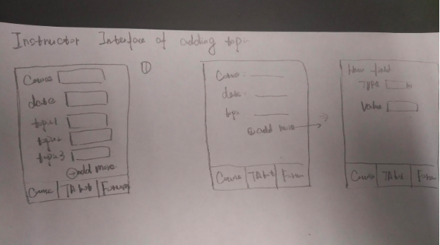
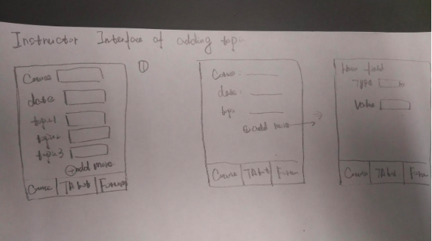

HCI Low-Fidelity Prototype and Test Plan: Easy Class
Recall that during in our observations on campus, the interaction problems we identified can summarized as: first sometimes students' questions in class might not get recognized by the instructors, second due to the physical limitations of spacious lecture halls, it's difficult to ensure students' voice to be heard by everyone else in the room during a lecture, and the last sometimes students' verbal interactions can be distractive for the other. To solve all these problems, we realized that what we can do is to build up an application capable of setting up communication channels electrically between instructors and students, and students and students. Bearing such an objective in mind, we came up the following design concepts that serve our purpose:
 

Figure 1 & 2: Android UI for student and instructor
Figure 3 & 4: Android UI for student and Desktop UI
Figure 5 & 6: Desktop chat room UI and Desktop forum UI
Figure 7 & 8: Desktop forum UI and Desktop chat room UI

Figure 9 & 10: Desktop forum Login and Web chat room UI
Among all the sketched design concepts we listed in the previous section, we can group them up roughly into three: a desktop web-based interactive system, a mobile web-based interactive, and an Android mobile application. In an effort to develop the prototypes for usability testing, we have evaluated each featured interface design separately and decided whether to retain or discard a design upon our mutual agreement. In this process, one group of design concepts were abandoned due to its similarity to another one. The selected two prototypes are as follows:
1)Prototype 1:
This design aims to improve student-instructor and student-student interaction using a desktop/mobile browser based application. Its multifaceted interface is composed of a “Classroom” where students and instructors can ask and reply to questions anonymously with a separate added for each lecture. An instructor may choose to sort questions with various forms of priority to answer the most relevant questions in a constrained amount of time. There is also a “Notifications” tab where students and instructors can keep track of their questions and answers. This tab also has a unique feature for instructors where a teacher receives “requests” to reply to questions that the students couldn't solve. Finally, a “Live” tab is available for the teacher to upload course content and poll/quiz their students. This way the students can stay connected and keep up with what's going on in class at all times by having perhaps something like a PowerPoint to follow along with even when they are looking at their phone.
Prototype 1(UI for Instructor):
Figure 11 & 12

Figure 13 & 14

Figure 15 & 16
Prototype 1(UI for Student):
Figure 17 & 18
Figure 19 & 20
Figure 21 & 22

Figure 23 & 24
Figure 25 & 26
Figure 27 & 28
Figure 29 & 30
2)Prototype 2:
This application is designed specifically to provide solutions to the problems mentioned in the previous section. To solve these problems, this prototype features a real-time indicators of the number of student declaring that they don't follow a specific topic during the lecture, or the number of students who have questions regarding a particular topic. With our design serving as a medium, both the indicators can be activated by any student to ease the communication effort between students and the instructor during a class. Moreover, this prototype also features a forum functionality, where student can post any academic questions in as a thread, and the other students will have access to the questions and they can help their colleagues by replying under the question thread. With such a functionality, every student's question is guaranteed to be accessible by the instructor and the other students, and students can also interact with their classmates anytime anywhere, and without distracting other students during a lecture.
The overall design of this prototype is simple and utile on purpose, as we figure such a classroom-assistive application as it is, it should neither distract nor tie down students by its complex or sophisticated interface features.
Prototype 2(UI for Instructor):


Figure 31 - 34
Figure 35 - 38
Figure 39
Prototype 2(UI for Student):
Figure 40 - 43
Figure 44 - 47
Figure 49 - 50
1.The system should set up communication channel between students and instructors.
The primary goal of this design is to facilitate the interactions between instructors and students, and between students and students, and thus the overall system fails absolutely if the target audience have trouble communicating with each others or even logging in the system.
2.The system's affordance and workflow should be easily perceivable and understandable.
Note that the majority of our target Users, the students, are usually characterized by impatience, which suggests they are prone to stay away from complex issues or even seemingly complicated ones. However, for our design purposes, we should aim to bring about easy and convenient user experience to our target audience, so the target student group won' t get confused by our awkward design and fall back to the traditional means of interaction during lecture.
3.The system interface should be simple and clean, without any distractions.
Considering this is a pedagogical application for students to use during lectures, which aims to help them to boost the class learning efficiency, it should not contain any unduly fancy or distractive design, as it runs counter to our original intent.
4.The system design should conform to custom and general conceptual models.
Since our design aims to facilitate interactions in the context of a lecture,so the user should be able to independently conduct the interaction with our design program and employ all its available functionalities without any external help. The whole system would fail if the user ends up with resorting other people verbally for assistance.Therefore, it is important that the user would have some intuitive understands about our system design or form familiarity with the design after they check out it actionable features on their own.
| Benchmark task | Related usability goals | Reasoning |
|---|---|---|
| Log in the system | 2,4 | By a easy and understandable interface design for login, the users should not get eluded by it or attempt to stay away from such difficult application. It's also important to conform to custom, as therefore the user can easily figure out the system workflow and successfully log in the system. |
| Send request for questions that are accessible by others | 1,2,4 | Successfully sending a question request that can be seen by other users indicates that the user has been in the communication channel with other users. In order to make this functionality available for the users, the system design should be readily understandable and agree with the users' conceptual models, so they won't get confused about the system workflow. |
| Acknowledge other users' requests and being able to react to such a request based on the acknowledgement | 1,2,4 | Successfully identifying other users' requests indicates that the user has been in the communication channel with other users. In order to make this functionality available for the users, the system design should be readily understandable and agree with the users' conceptual models, so they won't get confused about the system workflow. |
| Finish the given test user tasks in a timely manner without spending time exploring the extra features | 2,3,4 | Users not getting distracted by the other features of the system in the middle of performing the tasks demonstrates that the system is simple and clean, with which users can focus on their current tasks without distractions. |
| Complete given test user tasks as many as possible | 2,4 | If the test users can complete the given tasks, it means the system design are unstandable for them or agree with their intuitive modalization of the system. |

1. Observer briefing
2. User Introduction

3. Pre-test Questionnaire

4. Test Script
5. User Test Tasks
6. Data Sheet
7. Post-test Questionnaire
Test Summary
1)Subject #1
Background information
This subject is a high school student. Form the pretest questionnaire we know the test user has her own phone with medium level of usage. This user focus more on the utility of the smartphone application. The user rate herself neither introverted or extroverted and often have trouble interacting with instructors and classmates in class. As question arises, she tend to approach the instructor first for help.
The complete testing process is filmed as follows:
Based on the test user behaviors and feedbacks either verbally or post-test questionnaire along with our observation, the testing results are be summarized in the following table:
2)Subject #2
Background information
This subject is a graduate student. Form the pretest questionnaire we know the test user has his own phone with intensive usage. This user pays more attention on the utility of the smartphone application. The user rate himself sort of introverted and often have trouble interacting with instructors but not classmates in class. As question arises, he tend to figure it out on his own or discuss with classmates.
The complete testing process is filmed as follows:
Based on the test user behaviors and feedbacks either verbally or post-test questionnaire along with our observation, the testing results are be summarized in the following table:
3)Subject #3
Background information
This subject is a high school professor. Form the pretest questionnaire we know this instructor has a class of roughly 40 students.He is confident about acknowledge students' understandings on materials but is often harassed by students' repetitive questions.
The complete testing process is filmed as follows:
Based on the test user behaviors and feedbacks either verbally or post-test questionnaire along with our observation, the testing results are be summarized in the following table:

With the testing results ready, we are in a position to conduct benchmark assessment of the candidate prototypes based on the benchmark tasks we chose in the previous section, and the evaluation results come as follow:

Conclusion
1)For both prototypes, users failed to make use of the chat interface to post their own questions and simply replied to the ones already in the chat.
2)The first prototype's design led to a lot of confusion when it came to icons. More common icons such as the “thumbs up” and “notification bell” were generally well interpreted whereas the “flag” icon, the icons for the “Classroom” tab and “Live” tab left the users a bit confused.
3)The second prototype's “forum” design felt a little crowded for the users and overwhelmed them. Most users questioned what was a button and what wasn't.
4)Testers appreciated the simplicity in design and the layout of prototype 2 but the absence of many of the features present in the first prototype was generally not well received by the test subjects.
5)Powerpoint/Quiz/Poll in the “Live” segment of prototype 1 feature was greatly appealing to most testers
6)Security concerns were brought up with prototype 2's log-in scheme
Future suggestions
1)Alter the user interface design to make it more apparent that the classroom/forum portion of the app is meant to ask questions. To this end, we could potentially provide a tutorial after account creation and initial sign-in.
2)Opt for some kind of account creation or pin-assessment in order to protect users from impersonating others
3)Focus on possible integration of prototype 1's “Live” segment features with prototype 2's more simplistic design hierarchy.
4)Make sure to clearly design buttons so they are visually distinct from titles or other text during future design.
5)Chose/Design more familiar icons so that the user get's a better sense of the what their functionalities may be.